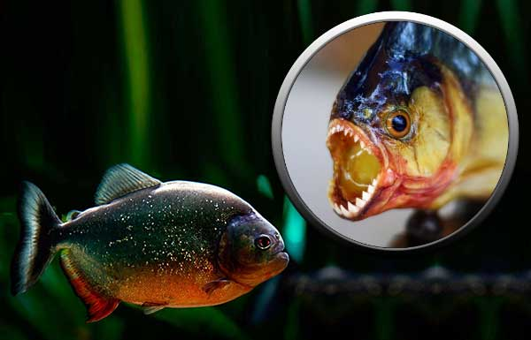
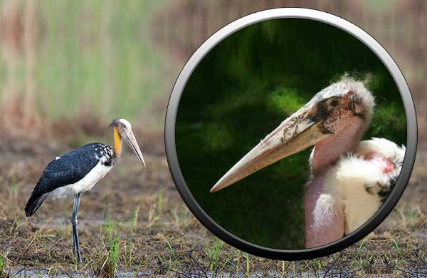
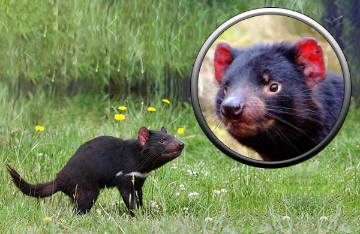

Главная
Животные
Животные паразиты
Животные падальщики
Растительноядные животные
Рыбы
Птицы
Растения
Человек
Вымершие
Животные падальщики
Как только какое-нибудь животное погибает, около его трупа выстраивается целая очередь желающих отведать мяса падали, начиная от насекомых (мух и жуков) и кончая грифами и гиенами. Птицы, питающиеся падалью, замечают добычу благодаря зорким глазам, другие животные - по тлетворному запаху.
Птицам и животным, питающимся падалью, нужны крепкие клювы и зубы, чтобы разрывать трупы. Иные поступают как шакалы, терпеливо ожидая, пока насытятся более крупные животные, а потом доедают остатки. У всех питающихся падалью животных желудочный сок должен быть чрезвычайно активным, чтобы иметь возможность убивать бактерий, которые быстро размножаются в падали, вызывая гниение. Конечно, все это кажется мало приятным, но эти животные играют в природе очень важную роль, уничтожая и используя мертвую материю. Без них вся Земля была бы покрыта разлагающимися трупами.
Пираньи

Пираний называют кровожадными, поскольку считается, что они готовы нападать, не останавливаясь ни перед чем. При этом большинство их видов относительно невелики и питаются, как правило, мертвыми или слабыми животными, которых легко поймать. Пираньи встречаются в реках восточной и центральной части Южной Америки. У них крупная короткая голова с сильными челюстями и острыми, как бритва, заходящими друг на друга, словно лезвия ножниц, зубами. Пираньи живут стаями и прекрасно чуют запах крови. Чаще всего они едят рыб и мелких млекопитающих или выпавших из гнезд птенцов. Стаями они могут охотиться на детенышей кайманов, оставленных матерью.
Степные могильщики

Марабу обитают на юге Африки. В основном эти аисты питаются падалью, но порой ловят насекомых, рыбу и мелких птиц. Они достаточно ловко умеют раззадорить других животных, питающихся падалью, и пока те ссорятся из-за добычи, сами быстро успевают пообедать. Часто их можно увидеть вблизи скотобоен. Длинный кожный мешок под их клювом никак не связан с приемом пищи. Он служит опознавательным знаком и играет определенную роль в брачной церемонии.
Тасманийский дьявол

Воинственным внешним видом и полной острых зубов пастью тасманийский дьявол производит малоприятное впечатление. Однако, несмотря на грозный вид, питается он исключительно мертвыми животными, которых отыскивает ночью. У него очень крепкие челюсти, которыми он перемалывает кости животного. На материковой части Австралии он истреблен; теперь его можно встретить только в отдаленных уголках Тасмании. Фермеры истребляли тасманийского дьявола потому, что несправедливо подозревали его в разорении курятников. Кроме того, у него оказалось вкусное мясо, напоминающее барашка. Как и большинство австралийских млекопитающих, тасманийский дьявол - сумчатое животное.